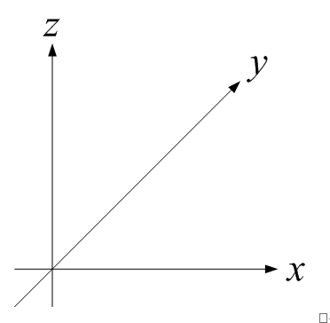
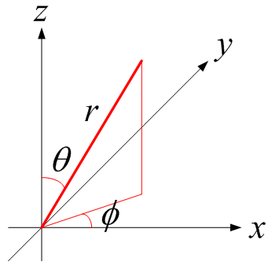
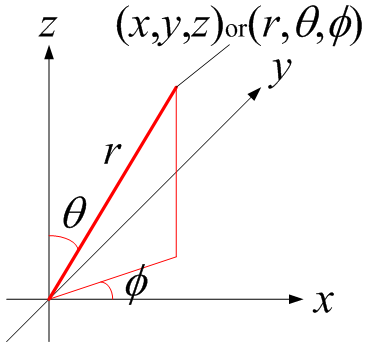

広告
球座標（極座標）
直交座標と球座標の座標変換について述べます。変数はそれぞれ下記が用いられます。
直交座標(x, y, z)
球座標(r, q, f)


球座標(r, q, f) ⇒直交座標(x, y, z)
球座標を直交座標に変換する場合です。変数は下記で表されます。
\[
\left\{
\begin{aligned}
x&=r\sin\theta\cos\phi\\
y&=r\sin\theta\sin\phi\\
z&=r\cos\theta
\end{aligned}
\right.
\]

ベクトルの変換は次式となります。
\[
\begin{aligned}
\vec{\delta}_x&=\vec{\delta}_r(\sin\theta\cos\phi)+\vec{\delta}_\theta(\cos\theta\cos\phi)+\vec{\delta}_\phi(-\sin\phi)\\
\vec{\delta}_y&=\vec{\delta}_r(\sin\theta\sin\phi)+\vec{\delta}_\theta(\cos\theta\sin\phi)+\vec{\delta}_\phi(\cos\phi)\\
\vec{\delta}_z&=\vec{\delta}_r(\cos\theta)+\vec{\delta}_\theta(-\sin\theta)+\vec{\delta}_\phi(0)
\end{aligned}
\]
作用素の変換は次式となります。
\[
\begin{aligned}
\frac{\partial}{\partial x}
&=(\sin\theta\cos\phi)\frac{\partial}{\partial r}
+\left(\frac{\cos\theta\cos\phi}{r}\right)\frac{\partial}{\partial\theta}
+\left(\frac{-\sin\phi}{r\sin\theta}\right)\frac{\partial}{\partial\phi}\\
\frac{\partial}{\partial y}
&=(\sin\theta\sin\phi)\frac{\partial}{\partial r}
+\left(\frac{\cos\theta\sin\phi}{r}\right)\frac{\partial}{\partial\theta}
+\left(\frac{\cos\phi}{r\sin\theta}\right)\frac{\partial}{\partial\phi}\\
\frac{\partial}{\partial z}
&=(\cos\theta)\frac{\partial}{\partial r}
+\left(\frac{-\sin\theta}{r}\right)\frac{\partial}{\partial\theta}
+(0)\frac{\partial}{\partial\phi}
\end{aligned}
\]
直交座標(x, y, z) ⇒球座標(r, q, f)
直交座標を円筒座標に変換する場合です。変数は下記で表されます。
\[
\left\{
\begin{aligned}
r&=+\sqrt{x^2+y^2+z^2}\\
\theta&=\tan^{-1}\left(\frac{\sqrt{x^2+y^2}}{z}\right)\\
\phi&=\tan^{-1}\left(\frac{y}{x}\right)
\end{aligned}
\right.
\]
ベクトルの変換は次式となります。
\[
\begin{aligned}
\vec{\delta}_r&=\vec{\delta}_x(\sin\theta\cos\phi)+\vec{\delta}_y(\sin\theta\sin\phi)+\vec{\delta}_z(\cos\theta)\\
\vec{\delta}_\theta&=\vec{\delta}_x(\cos\theta\cos\phi)+\vec{\delta}_y(\cos\theta\sin\phi)+\vec{\delta}_z(-\sin\theta)\\
\vec{\delta}_\phi&=\vec{\delta}_x(-\sin\phi)+\vec{\delta}_y(\cos\phi)+\vec{\delta}_z(0)
\end{aligned}
\]
作用素の変換は次式となります。
\[
\begin{aligned}
\frac{\partial}{\partial r}
&=\sin\theta\cos\phi\frac{\partial}{\partial x}
+\sin\theta\sin\phi\frac{\partial}{\partial y}
+\cos\theta\frac{\partial}{\partial z}\\
\frac{\partial}{\partial\theta}
&=r\cos\theta\cos\phi\frac{\partial}{\partial x}
+r\cos\theta\sin\phi\frac{\partial}{\partial y}
-r\sin\theta\frac{\partial}{\partial z}\\
\frac{\partial}{\partial\phi}
&=-r\sin\theta\sin\phi\frac{\partial}{\partial x}
+r\sin\theta\cos\phi\frac{\partial}{\partial y}
+(0)\frac{\partial}{\partial z}
\end{aligned}
\]
また、
\[
\begin{aligned}
\frac{\partial}{\partial r}\vec{\delta}_r&=0,\qquad
\frac{\partial}{\partial r}\vec{\delta}_\theta=0,\qquad
\frac{\partial}{\partial r}\vec{\delta}_\phi=0\\
\frac{\partial}{\partial\theta}\vec{\delta}_r&=\vec{\delta}_\theta,\qquad
\frac{\partial}{\partial\theta}\vec{\delta}_\theta=-\vec{\delta}_r,\qquad
\frac{\partial}{\partial\theta}\vec{\delta}_\phi=0\\
\frac{\partial}{\partial\phi}\vec{\delta}_r&=\vec{\delta}_\phi(\sin\theta),\qquad
\frac{\partial}{\partial\phi}\vec{\delta}_\theta=\vec{\delta}_\phi(\cos\theta),\qquad
\frac{\partial}{\partial\phi}\vec{\delta}_\phi=-\vec{\delta}_r(\sin\theta)-\vec{\delta}_\theta(\cos\theta)
\end{aligned}
\]
従って、
\[
\nabla
=\vec{\delta}_r\frac{\partial}{\partial r}
+\vec{\delta}_\theta\frac{1}{r}\frac{\partial}{\partial\theta}
+\vec{\delta}_\phi\frac{1}{r\sin\theta}\frac{\partial}{\partial\phi}
\]
| prev | | | top | | | next |